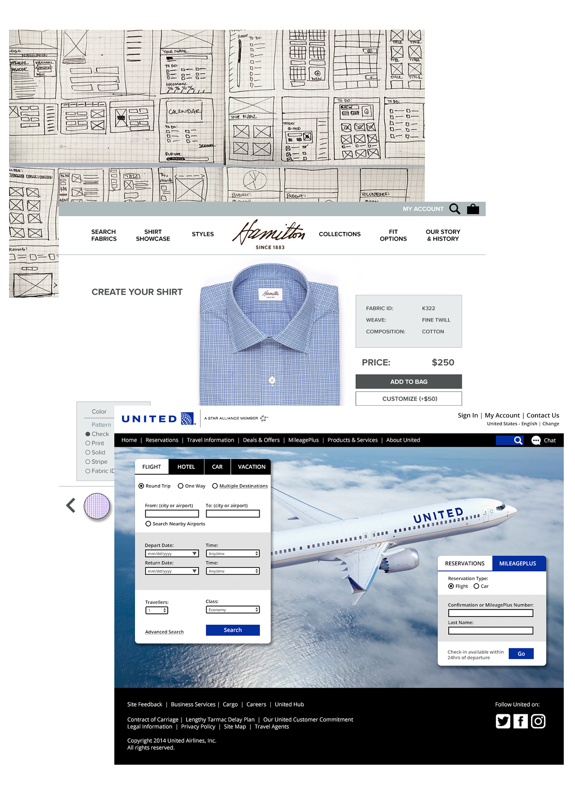
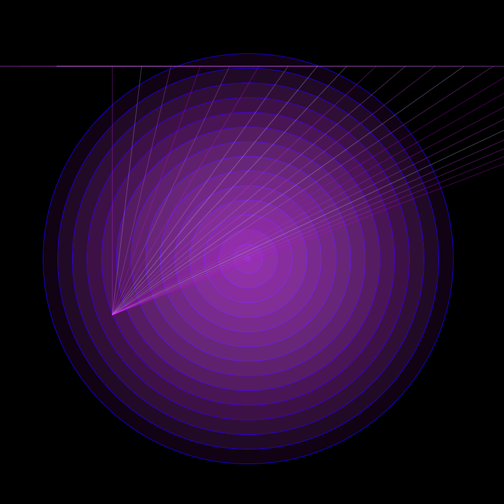

Client Work: CGI Applications
Role
UX/UI Designer
Agency
CGI
Year
2017-Present
I am currently working as a UX/UI Designer for CGI. I recently gained permission to share my work for my portfolio. We have government contracts so everything is very secret and hush-hush. Seriously, I was warned that I could go to jail. It was a very intense training video.
The work you see here is an example of one of the many pages of the application I’ve been working on. I work on a very big team that is split into 3 smaller teams. Each team develops a part of the application. I sit in on requirements and development meetings. I help write user stories and help edit the Business Analysts stories so that they stay consistent with Global Stories and UI that has already been developed. I also create sitemaps and high fidelity prototypes. These prototypes are clickable through using InVision.
I love my job. It’s complicated and challenging. I hope to gain more knowledge so that I can continue to provide only the best service to not only my clients, but also my team.

Client Work: Interactive Kiosk
Role
UX/UI Designer
& Project Manager
Agency
Shane Co.
Year
2013-2017
I taught myself how to be a UX/UI designer when I started working at Shane Co. as their Interactive Content Specialist in October 2013. I had been a photo retoucher the year before and I wanted a bigger challenge so I volunteered to launch their new display initiative. I launched over 164 displays nationwide in under 3 years. This job inspired me to go back to school and really learn the principals of Interactive design.
One of the projects I did there that I am most proud of is the interactive kiosk that was installed January 2017. I started the project in July of 2016. I did all of the research and information gathering from web management teams, sitemaps, wireframes, creation and testing of designs, sending designs to development, communicating with a development team to work out any issues, testing final designs, installation with multiple vendors and IT departments, launch, and looking at analytics to see how user flows are being utilized. Managed ordering the hardware and frames, putting in data drops, and installation. I worked with BOYD, Four Winds, Netsic, and our internal IT and Creative department.

Client Work: Iron Horse Performance
Role
UX/UI Designer
& Developer
Agency
Iron Horse Performance
Year
2017-Present
I always keep up good relationships with everyone I work with. It's exciting to see them grow and grow with them. I am currently helping several clients both individuals and companies. This section is under contruction because the work I am creating hasn't been finished.
Iron Horse Performance needs a website to provide easily accessible information to their customers. The website will help promote breeding, training, horse services such as Equi-resp and laser-treatment, mares and geldings for sale, and contact information. All pricing will be provided by contact only. The site will not post any prices.

Case Studies: UX/UI Designs
Role
UX/UI Designer
& Developer
Agency
MCAD &
Self-directed
Year
2016-Current
I've always had a passion for learning and creating. I began my official interactive design studies at Minneapolis College of Art and Design on January 8, 2016. I fell in love with not only design but code. It's fascinating to see how things are put together and what works from concept to finished product. Solving the puzzles and problems that come up is so rewarding.
All of these projects come from both school and self studies. I love following top designers in my field and find inspiration from not only their visual design but from their thought process and concepting. My favorite quote comes from The Design of Everyday Things by Donald A. Norman.
We must design our machines on the assumption that people will make errors.
It's so important to remember that no matter how beautiful or hard we've worked on a project that at the end it's for someone to use and understand. If they don't understand, then it's our responsibility to go back, reconsider, revise, and edit.

Daily UI
Role
Designer
Agency
Self-Study/Practice
Year
2017-Present
I've recently started creating a sort of Daily UI. I am inspired by the Daily UI which is an email that you can sign up for. My goal is to get inspired and feel creative while creating these. I want to practice doing faster and faster sketches. I want my designs to be tighter, cleaner.

Interactive Art
Role
Artist
& Developer
Agency
Freelance
Year
2017
Everything that I do has to be fully explored and learned. As an artist I've taken up many mediums over the years and development has become the most exciting and fascinating one. Through these small explorations, I am able to create new ideas and fully explore the limits to my creations. Once these are explored further, I will do installations and experiments in public spaces so that I can also observe the human interaction with my digital art.
I apologize but these designs will only work on desktop. They are not meant to be interacted with on mobile.